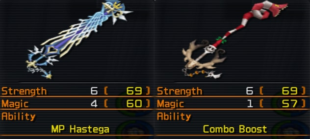
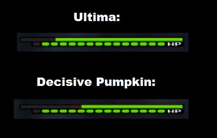
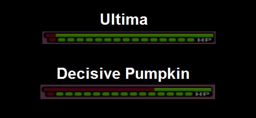

The main difference between the 2 Keyblades are their abilities:
Decisive Pumpkin has Combo Boost, which makes ground finishers stronger the more hits you landed during a combo.
Ultima has MP Hastega, which speeds up your MP regeneration by 75% as soon as you used it all up.

The 2 Keyblades have been compared with a normal ground combo against Data Roxas, who has 3168 HP.
This was tested with a Lvl.99 Sora who has 80 Strength and 64/67 Magic. (The magic varies because Ultima has 3 more magic stat than DP)
One Combo Boost equipped, no Combo / Air Combo Plus.
Tested was a whole combo attack, with 2 Default Hits and 2 Finishers.
First Roxas was blocked, then the following attacks commenced:
Counterguard -> Flash Step -> Guard Break -> Explosion
Roxas' HP afterwards:
Decisive Pumpkin: 2925 HP (243 Damage)
Ultima: 2957 HP (211 Damage)
A Picture for visual comparison:

Decisive Pumpkin did 32 more damage than Ultima. This doesn't sound like much, but it makes the fight much quicker. Air Attacks will still do the same damage. The 3 extra magic that Ultima has barely makes a difference during a ground combo, because the only attack that does magic damage is "Explosion" (The balls that circle around you).
Another comparison was done with the Lingering Will boss, with 2 Combo Plus and 2 Finishing Plus abilities equipped.
A full 4 hit ground combo with 3 finishers, which consist of Guard Break -> Explosion -> Guard Break . The following picture shows his HP Bar after a full combo with both Keyblades:

Decisive Pumpkin did a lot more damage than Ultima, and that with the same attacks and finishers.
The only thing Ultima does better is MP Regeneration: With Decisive Pumpkin, your MP bar needs around 22.5 seconds to restore. Ultima needs only ~17 seconds to fully recover your MP, which is way faster than any other Keyblade. These times where measured with 2 Full Bloom+, MP Haste and MP Hastera equipped, so your times may vary.
A video comparison between DP and Ultima (reload page to synchronize):
Ultima is slightly longer than Decisive Pumpkin. It's barely visible, but it's definitely longer. This doesn't make much of a difference, but it should make connecting attacks easier when dashing in with 'Slide Dash'. It also makes Dodge Slash a little bit more viable. A .gif showing the difference:
Overall, Decisive Pumpkin is a better Keyblade for doing a lot of damage with physical ground combos, but Ultima is better if you prefer to take it easy and heal a lot.